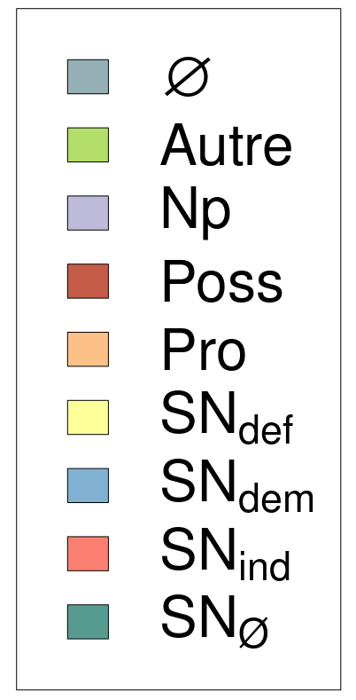

Longueur nb maillons : 42 mentions |
 |
»
» Agé de quatre-vingt-seize ans, [il] n'avait jamais été malade jusqu'au moment où, un mois auparavant, [il] avait pris froid, étant tombé dans une mare par une nuit obscure. Le lendemain [il] s'était mis au lit.
Depuis lors [il] agonisait. [1 phrases] » Il voulait parler de la famille [du vieux] , [son] petit-fils, âgé de cinquante-huit ans, et [sa] petite belle-fille, d'une année plus jeune. [21 phrases] Alors une voisine, qui sortait de chez elle pour se rendre à l'église, nous ayant aperçus : --« Ils sont à la messe, messieurs ; ils vont prier pour [le père] [15 phrases] « Ils veillent [leur mort] , dit mon cousin. [10 phrases]
Au bout de quelques minutes de silence, mon cousin demanda : « Eh bien, Anthime, [votre grand-père] est mort? --Oui, mon pauv 'monsieur, [il] a passé tantôt. [2 phrases] Alors, pour dire quelque chose, j'ajoutai : « [Il] était bien vieux.
» [son] temps était terminé, [il] n'avait plus rien à faire ici.
» [4 phrases] --A rien, dit Jules, mais ça se fait tous les jours ; pourquoi ne voulez -vous pas [le] montrer?? [4 phrases] Comme les petits-enfants [du mort] ne remuaient toujours pas, et demeuraient face à face, les yeux baissés, avec cette tête de bois des gens mécontents, qui semble dire : « Allez -vous -en, » mon cousin parla avec autorité : « Allons, Anthime, levez -vous, et conduisez -nous dans [sa] chambre.
» Mais l'homme, ayant pris son parti, répondit d'un air renfrogné : « C'est pas la peine, [il] n'y est pu, monsieur. --Mais alors, où donc est [-il] ??
» [1 phrases]
[C'] était [le vieux, tout sec] , les yeux clos, roulé dans [son] manteau de berger, et dormant là [son] dernier sommeil, au milieu d'antiques et noires croûtes de pain, aussi séculaires que [lui]
[Ses] enfants avaient réveillonné dessus! Jules, indigné, tremblant de colère, cria : « Pourquoi ne [l'] avez -vous pas laissé dans [son] lit, manants que vous êtes?? [1 phrases] J'couchions avec [lui] auparavant puisque j'étions qu'trois. D'puis qu' [il] est si malade, j'couchons par terre ; c'est dur, mon brave monsieur, dans ces temps ici. Eh ben, quand [il] a été trépassé, tantôt, j'nous sommes dit comme ça : Puisqu' [il] n'souffre pu, c't' [homme] , à quoi qu'ça sert de [l'] laisser dans l'lit?? J'pouvons ben [l'] mettre jusqu'à d'main dans la huche, et je... J'pouvions pourtant pas coucher avec [ce mort] , mes bons messieurs!! |
La ressource peut être téléchargée sur la page Ortolang
Si vous avez des questions ou vous voyez des erreurs, merci d'envoyer un mail à silvia.federzoni89@gmail.com
Site développé par S. Federzoni (contact)